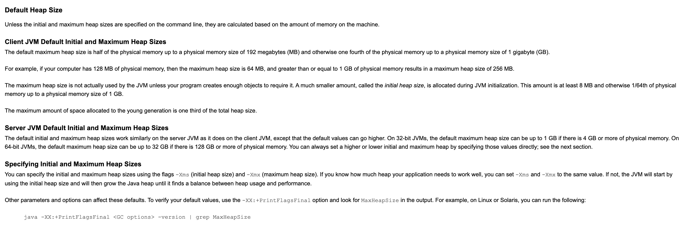
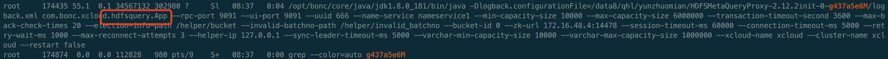
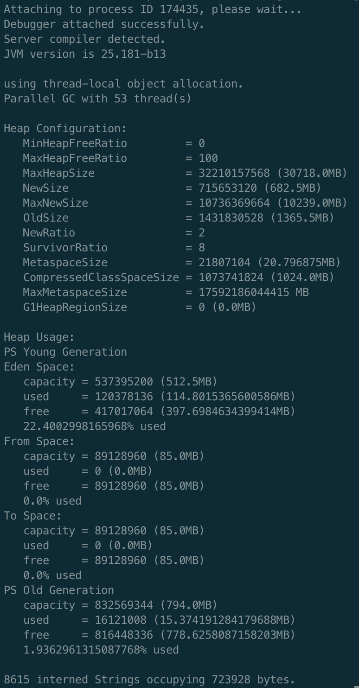
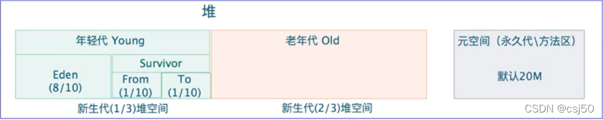
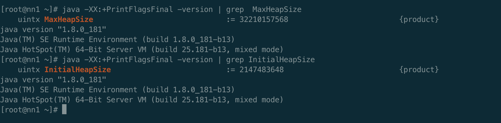
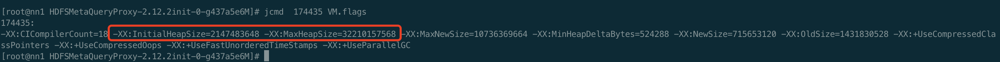
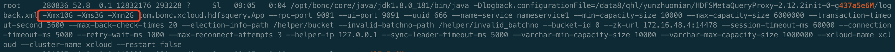
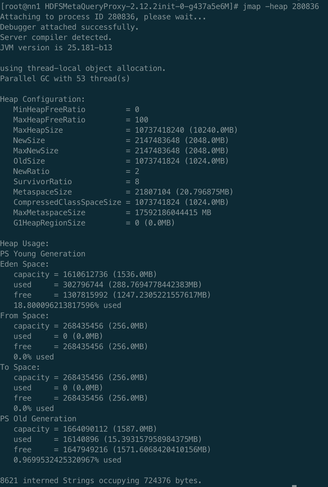
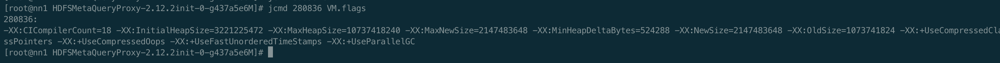
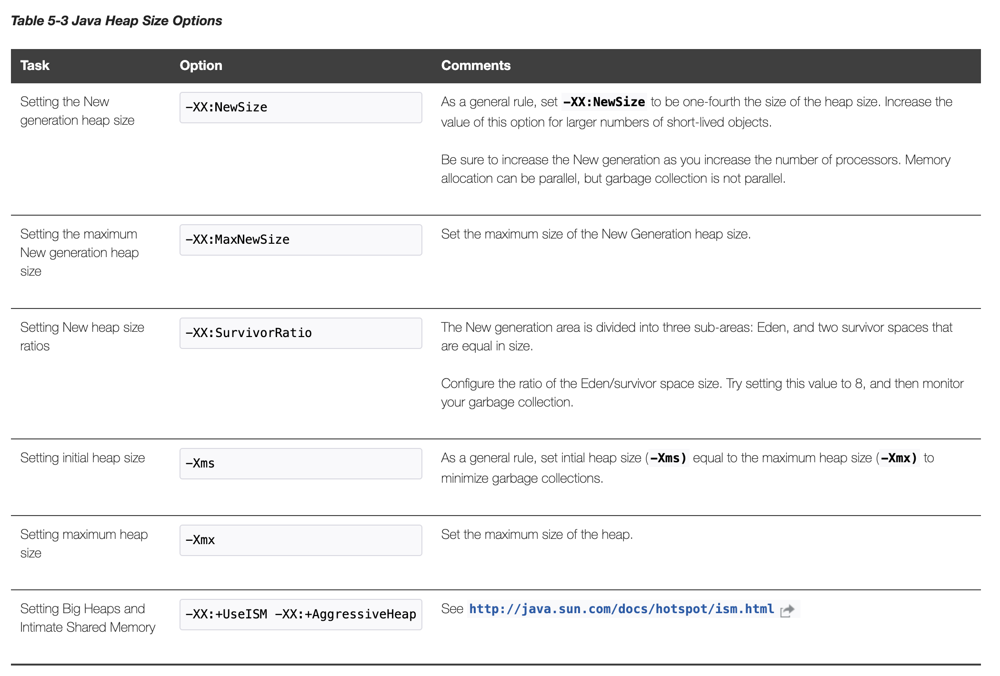

大家都知道JAVA进程必须运行在Java虚拟机中，当启动一个Java进程的时候，也必须给其给其分配内存方可运行，那么jvm 虚拟机到底给此进程分配了多少内存呢？是否有默认值呢? 我指定的-Xmx、-Xms、-Xmn到底有什么作用呢？本篇文章就是对齐进行讲解。
默认分配多少
根据JVM手册[1]，在JDK1.8以上(对于JAVA SE 5.0以及以下，请参考[2])，采用google翻译默认分配如下所示：
对于client模式：
1
2
3
4
5
6
7默认的最大堆大小是物理内存的一半，最高可达 192 兆字节 (MB)，否则为物理内存的四分之一，最高可达 1 吉字节 (GB)。
例如，如果您的计算机有 128 MB 的物理内存，则最大堆大小为 64 MB，大于或等于 1 GB 的物理内存导致最大堆大小为 256 MB。
JVM 不会实际使用最大堆大小，除非您的程序创建了足够的对象来需要它。 在 JVM 初始化期间分配的数量要小得多，称为初始堆大小。 此数量至少为 8 MB，否则为物理内存的 1/64，最大为 1 GB 的物理内存大小。
分配给年轻代的最大空间量是总堆大小的三分之一。对于server模式：
1
默认初始和最大堆大小在服务器 JVM 上的工作方式与在客户端 JVM 上的工作方式类似，只是默认值可以更高。 在 32 位 JVM 上，如果有 4 GB 或更多的物理内存，默认的最大堆大小可以达到 1 GB。 在 64 位 JVM 上，如果有 128 GB 或更多的物理内存，默认的最大堆大小可以达到 32 GB.

我们举个例子来验证一下。大家可以看到我们起了一个进程，没有设置任何的参数，那么这个进程的相关堆大小是多少呢？

通过jmap -heap ${pid} 可以看到如下所示：

其各个参数的含义[3]如下所示:
1 | Parallel GC with 2 thread(s)：采用并行垃圾收集器 |

可以看到最大堆大小为32210157568。初始分配的堆空间总大小为NewSize + OldSize = 715653120+1431830528=2147483648。
(但是Eden Space+From Space+To Space+PS Old Generation 的总和要小于2147483648，这部分还不是很清楚原因。)
由于我们实验的服务器的总内存是256GB，所以验证了JVM手册里面说的 在 64 位 JVM 上，如果有 128 GB 或更多的物理内存，默认的最大堆大小可以达到 32 GB
同时我们可以通过java -XX:+PrintFlagsFinal -version来看一下本机默认分配的JVM一些参数。与默认相同。

通过命令 jcmd ${pid} VM.flags 可以再次确认此进程分配内存相关参数。可以看到与预期一致。

参数的作用
如果我们启动的时候，指定Xmx,Xms等参数，又如何呢？

通过java -heap 命令可以看到分配内存如下所示：
，也是符合上面的规律的。
(但是Eden Space+From Space+To Space+PS Old Generation 的总和要大于NewSize + OldSize，所以通过这两个实验，猜测Eden Space+From Space+To Space+PS Old Generation仅仅是分配的内存，只要小于MaxHeapSize即可。与InitialHeapSize无关)
通过命令 jcmd ${pid} VM.flags 可以再次确认此进程分配内存相关参数。可以看到与预期一致。最大值为10GB，初始堆空间大小为3G。

Xmx与Xms如何设置
通过以上分析我们知道，Xmx是最大堆大小限制，Xms是初始堆大小。通过jvm手册[7]，可以看到设置Xms与Xmx相等，可以减少GC发生的次数。
。
所以在以后的实际经验中，可以设置Xms与Xmx一致即可[8]。
参考文献
[1] https://docs.oracle.com/javase/8/docs/technotes/guides/vm/gctuning/parallel.html#parallel_collector_excessive_gc
[2] https://docs.oracle.com/javase/8/docs/technotes/guides/vm/gc-ergonomics.html
[3] https://blog.csdn.net/csj50/article/details/122544491
[4] JVM Server与Client运行模式 https://blog.csdn.net/xlxxcc/article/details/52388195
[5] jvm调优 https://blog.csdn.net/weixin_45735355/article/details/121397268
[6] -X Command-line Options https://docs.oracle.com/cd/E13150_01/jrockit_jvm/jrockit/jrdocs/refman/optionX.html
[7] Java HotSpot VM Heap Size Options https://docs.oracle.com/cd/E21764_01/web.1111/e13814/jvm_tuning.htm#PERFM161
[8] JVM的Xms和Xmx参数设置为相同值有什么好处？ https://cloud.tencent.com/developer/article/1695047